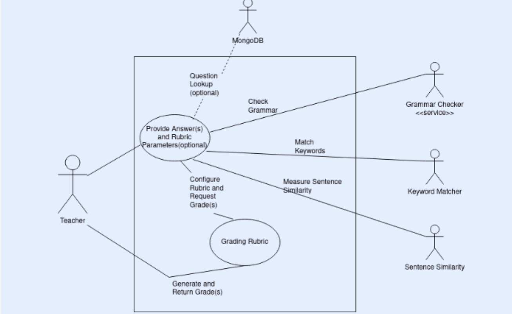

Automatic Grading of Student Answers using NLP Text
Team 35 for RCTS:
Aryaman Kolhe
Shrikara A
Vansh
Marda
Vineeth Bhat
The Problem
Grading subjective answers is time consuming
We propose an automated grading mechanism by using NLP on
students' answers
Iterations of the Problem
- One line answers - completed
- Multi line answers - tested
- Reports - future scope
Features to Implement
-
Upload Question(s) and Correct Answer(s) with Keywords
- Batch Processing of Answers
-
Provide Letter Grade(A,B,C,D,F) to Each Student Using a Rubric
-
Provide Visualizations for Student Performance
Modules
- Frontend - React
- Backend - Web Server - Flask
- Backend - Model - PyTorch
- Grading Rubric - Python
- Docker-compose
Core Tasks
- Select Sentence Similarity Model
-
Perform Grammar Checking and Keyword Matching
- Create a Grading Rubric
-
Provide APIs to Integrate With a Learning Management System(LMS)
- Create a UI and Backend Server
Selecting a Sentence Similarity Model
How to compare models?
What are the possible mistakes a student can make that should be
caught by the model?
Selecting a Sentence Similarity Model
Questions can be of different types:
- Numerical
- True or False
- Descriptive
Selecting a Sentence Similarity Model
Types of Mistakes in Answers
-
Negation: 2+2 is not 4
-
Contradiction
- Change of Numbers: 1919 vs 1939
- Approximation: 1918 vs 20th century
- Spelling Errors
- Context Switch: The man vs Rahul
- Deviation
- Combination of these errors
Models Tested
- all-MiniLM-L6-v2
- all-mpnet-base-v2
- all-MiniLM-L12-v2
- stsb-roberta-large
- distilbert-multilingual-nli-stsb-quora-ranking
- paraphrase-albert-small-v2
- paraphrase-distilroberta-base-v1
- distilbert-base-nli-stsb-mean-tokens
- all_datasets_v4_MiniLM-L6
- LaBSE
- distiluse-base-multilingual-cased-v1
- multi-qa-mpnet-base-cos-v1
- stsb-roberta-base-v2
- xlm-roberta-xl
Removing models that don't handle negations and contradictions
well
- stsb-roberta-large
- stsb-roberta-base-v2
- xlm-roberta-xl
stsb-roberta-base-v2 Performance
RoBERTa was the only one that could handle negations and
contradictions well, could distinguish between spelling errors in
proper nouns and other words and had sufficient variance in
similarity score.
Grammar Checking and Keyword Matching
Local vs API for grammar checking
Chosen API - Gingerit
Keyword matching is simple string search
Creating a Grading Rubric
Relative vs Absolute Scheme
ML Based vs Programmatic
The Absolute, Programmatic Rubric
The grade received is based on cutoffs from the final score. The
final score is generated from the sentence similarity score from
RoBERTa after adding penalties for grammatical errors and
keyword misses.
The Absolute, Programmatic Rubric
Cutoffs:
- A: 0.969
- B: 0.932
- C: 0.909
- D: 0.88
- F: <0.88
- Grammatical Error Penalty
- Keyword Miss Penalty
Integrating with an LMS

Integrating with an LMS
API to evaluate student, along with batch processing
UI and Backend
Backend written in Flask
Frontend written in React
UI and Backend
JSON Schema
{
"question_number":Number:{
"question": String,
"answer": String,
"keywords": [String]
},
}
UI and Backend
Database Integration
Questions are uploaded in MongoDB
UI and Backend
Visualizations
Along with grades, visualizations are displayed